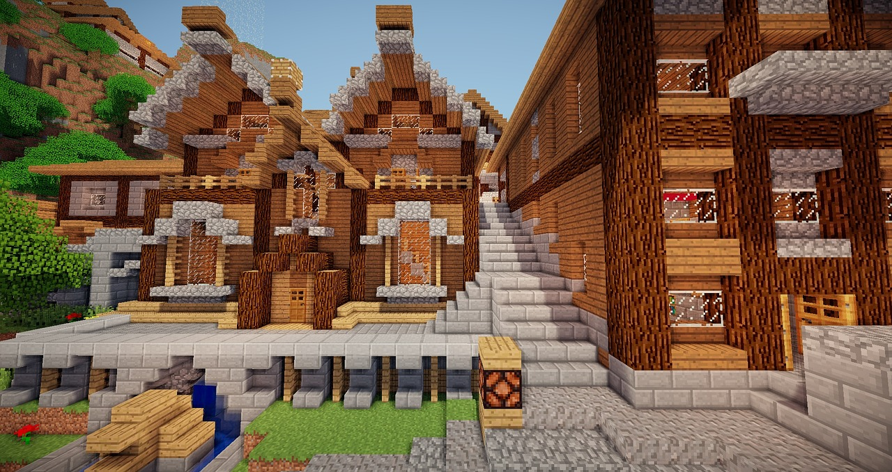
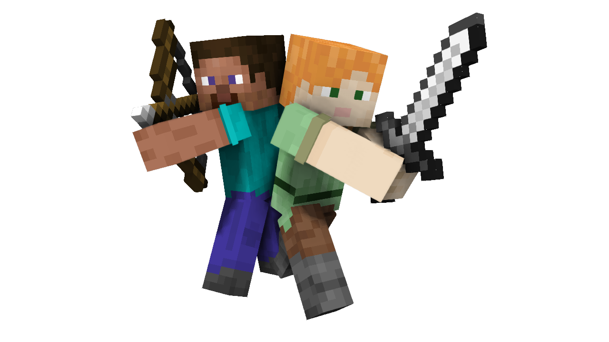

Minecraft
Minecraft is a 2011 sandbox game developed by Mojang Studios and originally released in 2009. The game was created by Markus "Notch" Persson in the Java programming language. Following several early private testing versions, it was first made public in May 2009 before being fully released on November 18, 2011, with Notch stepping down and Jens "Jeb" Bergensten taking over development. Minecraft has become the best-selling video game in history, with over 300 million copies sold and nearly 140 million monthly active players as of 2023. It has been ported to several platforms. In Minecraft, players explore a blocky, pixelated procedurally generated, three-dimensional world with virtually infinite terrain. Players can discover and extract raw materials, craft tools and items, and build structures, earthworks, and machines. Depending on their chosen game mode, players can fight hostile mobs, as well as cooperate with or compete against other players in the same world. Game modes include a survival mode (in which players must acquire resources to build in the world and maintain health), creative mode (in which players have unlimited resources and the ability to fly), spectator mode (in which players can fly, go through blocks, and enter the bodies of other players and entities), adventure mode (in which players have to survive without being able to build and place blocks) and hardcore mode (in which the difficulty is set to Hard and dying causes the player to lose their ability to play on that world). The game's large community also offers a wide variety of user-generated content, such as modifications, servers, skins, texture packs, and custom maps, which add new game mechanics and possibilities
Player
Steve is a player character from the 2011 sandbox video game Minecraft. Created by Swedish video game developer Markus "Notch" Persson and introduced in the 2009 Java-based version, Steve is one of nine default player character skins available for players of contemporary versions of Minecraft. S teve lacks an official backstory as he is intended to be a customizable player avatar as opposed to being a predefined character. His feminine counterpart, Alex, was introduced in August 2014 for Java PC versions of Minecraft, with the other seven debuting in the Java edition of the game in October 2022. Depending on the version of Minecraft, players have a choice of defaulting to either Steve or any other variant skins when creating a new account. However, the skin is easy to change from the game itself or website.
